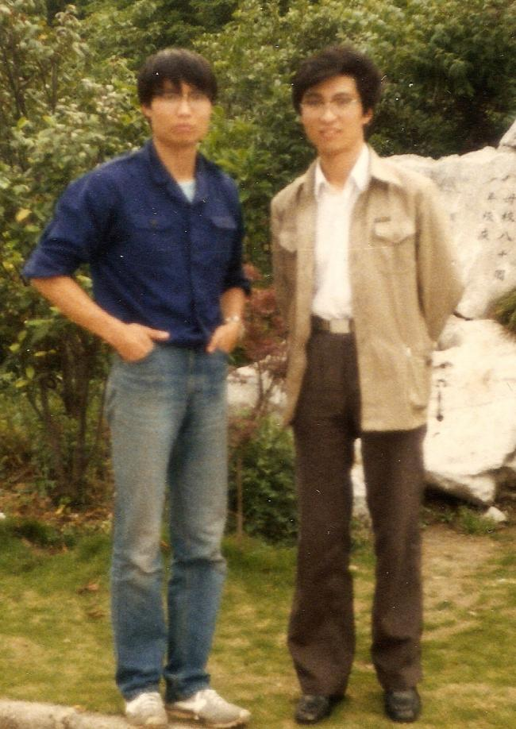
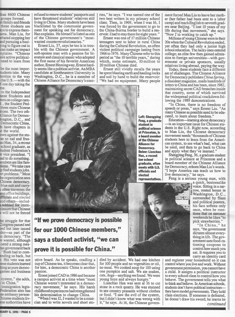

首先，祝贺你成为中国共产党的最高领导。你在中国面临两种前途之际接班，是历史的选择，也是众望所归。从此，中国向何处去，对你来说已不是一个理论的问题，而是一个实践的问题。这个问题的答案，取决于你的智慧和决心，也将决定中国的命运。毛泽东和他的战友们不满于旧制度的不公，建立了中华人民共和国。63年来，中国人民在共产党领导下为实现社会公平正义进行了不懈的努力。在付出巨大代价后，人们终于发现：在公平之上，还有正义；正义之上，还有人道。中国真正缺乏的，不是资本主义，不是社会主义，而是人道主义。以人为本，把人当人，包括对思想自由与独立意志的尊重，是和谐社会的基础。缺此，无论做宪政梦还是富强梦，都会以噩梦结束；缺此，无论搞资本主义还是搞社会主义，都会以悲剧告终。党内民主，以法治国，是中华民族复兴的必经之路。如果说经济改革的实质是在共产党的领导下搞资本主义，政治改革的核心就是在共产党的领导下实现宪政民主。宪政是共识，关键在于谁主立宪。君主，民主，还是党主？君主立宪是康梁的理想，民主立宪就今日中国而言是太遥远的未来。在目前条件下，只可能是党主立宪，即在共产党领导下解决共产党自己权力结构与权力制衡的问题。诚然，正如朋友翁永曦所说，就像医生给自己开刀，这是一项几乎不可能完成的任务。但是中国别无选择。除共产党外，中国没有任何政治力量可以主导政治改革。能亡中共的，只有它自己；能救中共的，也只有它自己。“党的未来取决于党本身，而不是取决于他人。”（俞正声）政改是共产党对自己的革命，是共产党的政治突围。在这个意义上，我同意刘一明先生的意见：为了政治改革成功，“这个党的领导不但不能削弱，还应加强，党对军队的控制不但不能削弱，也应加强。人民应该再给这个党一个机会，因为这个党毕竟前三十年统一了国家(尽管贫字当头)，后三十年富裕了社会(尽管两极分化)，应该再允许这个党探索三十年，中国社会可能会有根本的改变。” 作为红二代子弟和中国共产党的领袖，我相信你对党的忠诚，不愿意看到苏共解体的事件在中国重演。但是，作为中国人民的儿子和共和国的领袖，你对国家和民族负有更大的责任。你无疑希望中国共产党代表中国人民的利益，而中国人民也支持共产党。但现实是中共这个曾经代表人民利益的党已经在相当程度上腐化了，背离了人民。造成党腐败的原因主要不在党政官员的个人品质，而是缺乏监督的一元化的权力结构。因此，整党、清党只能治标，不能治本。要从根本上解决问题，必须开展政治体制改革。政改是中国当前最大的政治。它关系到中国共产党的生死存亡，也关系到中华民族的生死存亡。习先生，你相信共产主义，我不再相信。但我尊重一切真诚的共产党人。从傅立叶、欧文、马克思、到陈独秀，他们都是理想主义者，幻想一个没有剥削、没有压迫、人人劳动、财产公有的社会。为实现人间天堂，欧文建立了“新和谐村”，毛泽东首创了“人民公社”。
但它们都失败了。罗素曾说：“一个人30岁以前不相信社会主义是没有良心，30岁以后还相信就是没有头脑。” 从1949到1979，中国为实现共产主义作出过真诚的努力。它在三十而立之年告别了共产主义，走上了改革开放的道路。一个世纪以来，共产主义运动在全世界范围内吸引了无数向往自由解放的优秀分子，结果却开辟了一条通往奴役之路。它许诺人们天堂，却把他们带进了地狱。在付出亿万生命代价之后，共产主义运动彻底失败了。从纯粹哲学意义上说，共产主义的失败是人性的胜利：不完美的人性战胜了完美的主义。换言之，不是共产主义太坏而被人类抛弃，是人类配不上共产主义。它的失败不是因为它的邪恶，而是因为它的崇高；不是因为它不道德，而是因为它不可能。也许，共产主义运动是世界的劫数，人类在劫难逃。悲剧的根源是人类的无知、愚昧和狂妄：它企图挑战上帝，创造新人类。幸运的是，疯狂之后人类终于恢复了理性，认识到一个理想无论多么美好，也不能用活人去做实验。习先生，我们是同时代人，有着相同的经历，相信在许多方面也有共识。以大公无私为基础的共产主义不是不符合中国国情，它是不符合人性。人性——天使和野兽的结合——只能用制度来协调；任何用教育或强力来改造人性的努力注定会失败。洗脑虽一时有效，但不能长久。在压力下，人性可以沉默、扭曲，但绝不会改变。其实，今天弥漫全国的贪婪和腐败正是长久被压抑的人性的本能反弹。应该承认，毛泽东一代共产党人对理想是执着的；他们比我们更有魄力，更有牺牲精神。今天的中国人，无论是拥共的还是反共的，都缺乏一种真诚。有人曾问一位从共运走向民运又从民运走向基督的朋友是否真信上帝。他的回答是：“胡锦涛真信共产主义吗？”这是一种可怕的亵渎：连上帝都敢信，还有什么不敢。苏共解体时，两千万党员无动于衷，违背了他们为共产主义事业奋斗终身的誓言。我不知道今天中共八千万党员中有多少真正信仰共产主义，会在党有危机时挺身而出。但我肯定知道的是，在普林斯顿大学八年中我所见到的非党的共产主义信徒比我一生中在中国见到的还要多。习先生，很高兴看到你把权力关进笼子的讲话。但是，权力这只野兽贪婪、暴虐、狡猾、诱人，并具有极大的排它性，把它关进笼子绝非易事。中国共产党拥有巨大的权力，同时也负有巨大的责任。政改的核心是规范、约束党的权力，它的突破点只能是党内民主。没有理由期待一个对自己都无法监督制约（或曰“不民主”）的政党会对别人民主，会与国民党或中国其它政治势力分享政权。鉴于自身的局限和苏联解体的教训，中国共产党不能、不会、也不该把开放党禁作为政改的突破点。但它完全可以借鉴美国和日本的经验，完成从革命党向执政党的过渡。美国建国初期，也是一党——华盛顿革命集团——独大，没有与其它政治势力分享政权。通过让少数人先民主起来，它逐渐实现了全民民主。通过宪政，华盛顿革命集团完成了从革命党向执政党的过渡，自我分裂成联邦党和反联邦党，后又演变为民主党和共和党，一直延续至今。同样，日本今天的两党制，也是从自民党一党分化出来的。它为战后日本政治的稳定提供了保证。
美国是一个法治国家，宪法是最高纲领，无人可以超越。但美国宪法是怎么来的呢？上帝没有给美国一部宪法，美国的宪法是人制订的。具体地说，是战胜了英国殖民者的华盛顿革命集团制订的，在相当长一段时期内也是由这一集团执行的。1787年，55位反叛者（后称国父）聚集费城，争吵了117天，于是有了美国宪法。1789年，美国第一次总统选举，390万人中，只有不到20%的人有选举权。没有选举权的人包括女人（50%），2/5的黑人（10%），不纳税的穷人和反对过革命的人（20%）。这不是君主立宪，也不是民主立宪，而是典型的“党主立宪”。华盛顿和他的战友们没有与被赶到英伦三岛的保守派共同制宪，也没有与国内自由派托马斯•潘恩和亨利•帕特里克——前者是《常识》的作者，后者提出美国革命著名口号“不自由，毋宁死”——分享政权。但是，他们在解决内部分歧时是充分民主的。认识到派系斗争是政治的题中之义，华盛顿在制宪会议中没有用他在独立战争中获取的巨大威望和权力压制反对派，而是端坐在他的木椅上，像一座雕像。与此同时，他的朋友麦迪逊忠实地记录了制宪会议的全过程，留下了一部众人合写的历史巨著——《制宪会议记录》（Notes On Philadelphia Convention）。三十年前，笔者从中国到美国读书，通读了这部63万字的笔记，惊讶地发现：原来政治还可以这样搞。三权分立的顶层设计权力制衡不是美国国父的发明，他们的杰出贡献在于把权力制衡的原则（普世价值）和美国现实（美国特色）有机地统一在一起，创造了人类历史上第一部以三权分立为基础的国家机器:
政治的最高艺术是妥协，政治学的最高境界是实现人性和制度的统一。在制宪会议中，我们看到这两者的完美统一。美国宪法没有照搬英国大宪章，由此而来的政治制度也与英国迥异。没有人完全同意这部宪法，但它又是国父们各自所能争到的最好结果。就个人来说，富兰克林喜欢君主立宪。汉密尔顿主张帝制，更多的人则倾向于地方自治。制宪会议成功的关键不是谋略，而是妥协。通过妥协，习惯在荒野中开垦的美国人在似乎没有路的地方找到了一条路。中国也应该有自己的路。
习先生，三十年前，邓小平提出让少数人先富起来的口号，经济改革由此突破。今天，随着经济改革的成功，让少数人先民主起来已成为党内外精英的共识。这一共识的具体表达方式就是党内民主。推行党内民主不仅是因为它的可操作性，更重要的是它可以规范党内的派系斗争，防止不择手段的政客利用民心来实现自己的野心。“党外无党，帝王思想；党内无派，千奇百怪”。这是毛泽东对中国政治现实的正确描述。但他终其一生却没有找到一条正确处理党内矛盾的方法。在中共九十年的历史上，党内的反对派总是被打成反动派。鉴于这一历史教训，政改的当务之急，是开展党内民主，把本来就存在的党内派别斗争公开化、合法化、制度化。具体做法可参考越共总书记由中央委员会选出的经验：党内两派选出代表人物，依执政理念不同竞选最高职位；军队在竞选中严守中立；竞选双方遵重选举结果，在朝的执政，在野的监督；然后，若干年再来一次。
我相信，以党内民主为核心的一党两派制一旦确立，腐败将从根本上受到遏制。随着党内最高领袖的民主产生和派系监督的实现，“权为民所赋”将成为现实；三民（顺民，刁民，暴民）将为公民取代；施党内家法的纪委和庞大而扰民的维稳机构也将最终退出历史舞台。对此俞正声先生有不同意见。他在2011年上海一次党员大会上说，党内分派势必引起党内分裂，使党成为政客野心家的竞技场。他的担心不无道理。但问题是，不允许党内分派，党内政客野心家就不竞技了吗？不准明争，就会暗斗；不数人头，就砍人头；不是七八年选举一次，就是七八年内斗一次。孰好孰坏，不言而喻。所以，关键不是禁止党内分派，而是建立规则，让党争在有序的环境下进行。
习先生，纵观世界历史，凡成功政治改革无不自上而下。但是，改革失控导致革命的例子亦比比皆是。人们常说改革和革命赛跑，这并不正确。在更多的情况下，革命和改革不是替代关系，而是因果关系；革命是改革的私生子。托克维尔名言：“对于一个坏政府来说，最危险的时刻通常就是它开始改革的时刻。”这一规律完全适用于路易十六、尼古拉二世和满清王朝的最后统治者。他们都有心向善，梦想和谐社会，却都在政改的路上碰上了革命的无常。与他们的前辈——路易十四、伊凡大帝和扬洲的屠城者——相比，这些末日王朝的统治者无疑是开明和仁慈的。历史的吊诡是，王朝总是亡在它最好的时候。“哪里有压迫，哪里就有反抗；压迫越深，反抗越烈。”这是宣传鼓动，不是事实。历史的真实是，哪里有压迫，哪里就有歌唱（颂歌）；压迫越深，歌声越嘹亮。经历过镇反肃反反右和文革残酷阶级斗争的中国人，不难理解个中道理。从这一角度观察，中国今天的民怨和每年数以万计的群体事件，恰恰反映了中国社会的巨大进步：言论逐渐开放，恐惧正在消失，人民不再愚昧。这是共和国历史上最好的时期，也是最危险的时期。毛泽东相信阶级斗争是人类发展的基本动力。方励之反对共产党，提出“民主不是赐予的”。在对斗争哲学的信仰上，他们没有区别。相信斗争，不善妥协，我们会在没有矛盾的地方找到矛盾，在没有斗争的地方开展斗争。事实上，推动人类进步的不是斗争，是妥协。媳妇的斗争不能结束婆婆的专制，要结束婆媳的天敌关系，只有改变家庭结构。对这一点，凡是仔细观察过近年来中国家庭关系变化的人，相信都会有同感。同样，被压迫者的斗争并不能结束政治迫害，要结束政治迫害，只有改变政治结构。在专制淫威下，中国人是顺民；政策宽松时，我们是刁民；动乱革命时，我们是暴民。这就是中国亘古不变的三民主义。除此以外，我们似乎不知道还有第四种活法。中国人从未做过公民，更没有公民社会。重读历史，我们看到导致幸亥革命爆发的四川保路运动，并不是公民维权，而是一场典型的刁民运动；它是一群贪婪的乡绅对一个垂死政府的无耻敲诈。王朝初年都肃反杀人，末年都搞和谐社会。刁民就是和谐社会的必然产物。刁民是顺民向公民转变的必经阶段，他往上走一步就是公民，向下一步则为暴民。改革的任务就是通过宪政民主，使政府完成从人治到法治的转变，人民完成从刁民到公民的转变。宪政民主是中国共产党摆脱帝制，告别革命，走向未来的必经之路。这条路走通了，中国将走出王朝循环。失败了，中共将同历史上其它的封建王朝一样，成为历史沧海中的一个泡沫。千秋万代是秦始皇的梦想，打江山、坐江山是农民的境界。共产党人的胸怀应该与此不同。事实上，今天中国共产党能对中国做的最大贡献，就是利用自己巨大的政治和经济资源主动地开展政治改革，实行政党政治，使中国有序地走向民主。毕竟，天下没有不散的宴席，也没有永久的执政党。党内民主成功之日，就是一党专政结束之时。在宪政民主中消失的中国共产党给中国一条出路，也给了自己一条退路。
习先生，政见不同、争权夺利是政客的本能，也是政治的题中之义。但是否以暴力解决分歧则是文明与野蛮的分野。你有你激进的理由，我有我保守的道理。双方尽可争论，但都应遵守人类底线，不要相互杀戮。据吴忠在《炎黄春秋》上发表的文章披露，林彪9.13前曾一度想给毛泽东写信，建议十年内对政治局委员采取四不——不抓、不押、不撤、不杀——政策，并把此项政策作为命令传达到每一个解放军指战员，使其成为纪律。这是林彪鉴于党内残酷斗争历史，为自己和他的战友们寻找一条活路的最后努力。似乎是不想自取其辱，信写好没有发出。可以想象，即使此信提交政治局讨论也很难被通过。因为当时大权在握的江青集团不会预料到五年之后（1976）他们自己会被军人抓捕，正如五年之前（1966）林协助毛用军队逮捕其他政治局委员时没有想到会有9.13一样。善有善报，恶有恶报；不是不报，时候未到。政治风云变幻莫测，冥冥之中似有天意。政治有时不是来世报，而是现世报。写这封信时的林彪，处在他一生中最清醒的时刻。精研政变，深谙权术，相信政治斗争就是你死我活，林彪终于在太晚的时候认识到自己活，也让别人活的道理。他想把军队关进权力的笼子，却已失去了笼子的钥匙。他本来是有——至少是部分拥有——这把钥匙的。
习先生，作为总书记和三军统帅，你大权在握，完全具有推行军队国家化的条件。需要的只是智慧和决心。希望你接受林彪的教训，及早让军队退出政治。切不可认为今天能控制军队，就永远可以控制。殷鉴不远，萨达姆、穆巴拉克、卡扎非控制军队几十年，最后还是成为军人政治的牺牲品。如果说把权力关进笼子是普世价值，把军队关进笼子就是当务之急。毕竟，人类早已走出了丛林，用军队搞政治不符合现代文明标准。国家要长治久安，军人必须退出政治，不对政府指手画脚。因为无论是党指挥枪，还是枪指挥党，都是腐朽的帝制思想，最终只会导致动乱。倘若类似天安门事件的民变再次发生，需要军队开枪镇压，我相信中国军人不会再服从命令。从前年的埃及事件中他们已经看到，军人的命运并非注定是刽子手或替罪羊。只要有机会介入政治，凭借一纸“绝不向人民开枪”的声明，他们就能以收拾局面的名义收拾政权。这种既得民意，又得实利的好事，军人不会看不到。
结论是：在一个没有信仰的时代，党绝对指挥不动枪；一旦突然事件发生，只能是枪指挥党。托克维尔在《论美国的民主》一书中写道：在美国，重大政治问题最终都变成司法问题。不幸的是，它们在中国都变成军事问题。枪杆子里面出政权不仅是毛泽东的信仰，也是除自由派外所有中国政客的信条。据说江泽民初任总书记时，曾支持王沪宁军队国家化的主张，遭到军人反对。现在看来，即使确有其事，江也不是真正想实行军队国家化，把党军变成国军。他支持王，只是因为他还没有控制军队。邓小平去世后，江大权独揽，再也不提军队国家化的主张。陈公博在回忆录中说：一生从政，两点经验：1.凡天下事，到不得了的时候，就了了；2.凡中国事，到军人妄言干政的时候，就乱了。试看今天中国，少将朱成虎，罗援，张召忠在CCTV上竞相亮相，指点江山。上将刘亚洲为自由派作家赵无眠旧书《百年功罪》写序，带三十位将军站台。上将刘源为左派领袖张木生新书《读李零，思国运》写序，携六位将军助阵。军人如此干政，实非国家之福。严肃军纪，不仅要禁止军人喝酒，更应禁止他们论政。
习先生，看了网上流传的南巡讲话，知道你对苏联军队在苏共解体时的表现失望：“十四万人齐解甲，竟无一人是男儿。” 可是，如果军人开枪了，苏共政权就能保住吗？“六•四”的经验不能无限重复，一个靠坦克和刺刀维持的政府是不能持久的。事实上，苏共解体不是少数政客的选择，它在很大程度上代表了人民的意愿，其根本原因是苏共的腐败和脱离人民。没有人愿意去为一个腐败的政府殉葬。要避免苏联的悲剧，只有坚定不移地走改革开放的路，在经济改革成功之后，开展以宪政民主为目标的政治改革。
习先生，我们都知道党国之后，必然兴起的是军国。在党政不分的党国体制下，军队国家化是个伪命题，因为党本身就是国家（朕即国家）。只有在宪政民主实现之后，军队国家化才有可能。军国是党国意识形态崩溃的产物。它是一个靠力量而不是信仰维持的政权。随着经济的腾飞和共产主义意识形态的崩溃，中国正不可避免地从党国转变为军国。美国不喜欢军国，因为它不符合美国的价值观。但中国似乎却别无选择。它付不起美式民主的高昂代价。军队是中国社会最有组织的力量，注定要成为党国遗产的继承人。看到你最近频频视察军队，感觉是喜忧参半。高兴的是你对军队比你的前任有更深的感情和关系；担忧的是你会太依赖军人的力量，忘记中国共产党人的初衷是建立一个民主富强的新中国。必须承认，中国已接近富强，但并不民主。我支持军国，是因为我相信它是从党国走向民国的必经阶段。军国不民主，但它能提供社会转型必须的秩序，而秩序是中国最稀缺的产品。正如经济改革的成功需要一个良好的投资环境，政治改革的成功需要一个稳定的社会秩序。在宪政民主建立之前，只有军队能提供这种秩序，为改革开放保驾护航。吊诡的是，政改的目的是把中共自己的权力关进笼子；军队支持政改的目的是让军人远离政治，不再干政。总而言之，权力必须受到约束。你不约束权力，它就会祸害百姓；你不把军队关进笼子，它就会把你关进笼子。邓小平晚年最大的功绩是取消了干部终身制。老人退出政治，中国没有乱；军人退出政治，中国只会更好。
习先生，当你说宪法的尊严和灵魂是实施时，我相信你的本意是党主立宪，即在共产党的领导下贯彻落实宪法的条款，使之从一纸虚文变成治国大纲。讲话被人们按自己的愿望解读，从而引发了崇拜力量的富强派和崇拜自由的宪政派在南方周末事件上的冲突。冲突的一方主张自由梦、民主梦、宪政梦；另一方强调站起来、富起来、强起来。没有人想挑战你，但双方无疑都想影响你，垄断对中华民族百年复兴梦的解释权。宪政派相信他们代表民意，站在历史正确一方，掌握中国的未来；富强派认为中华民族今天比任何时候都更接近它的梦想，冒然推行宪政派的主张只会中断梦的进程，使中国陷入分裂、混乱。宪政派的大旗上写着“普世价值”，富强派的大旗上则直书“中国特色”。世界上无疑有普世价值，否则地球村不会存在。但中国当然也有自己的特色，否则也就没有中国。尽管普世派和特色派针锋相对，势不两立，其实并无本质的区别。平心而论，普世代表中国的未来，而特色更接近于中国的现实。没有普世，中国就没有梦；没有特色，中国则没有根。
习先生，改革开放和互联网的出现，使新闻自由成为时代潮流。党既然不能控制思想，自然也就无法控制言论。人生有一张嘴就有说话的权利，生有一个大脑就有思想的权利，同时也就有不同意其它大脑的权利。南方周末事件再一次表明，政府对新闻的管理是如何落后于时代：傲慢的权力不仅要管思想、管言论、还要管梦。当南周记者戴志勇宣称中国梦是宪政梦、自由梦时，他并没有否认别人的梦。他只是阐述了自己的梦想。也许，社论的删改者更准确地把握了你的原意，而当今中国大多数人的确是在做富强梦。即便如此，也应该允许少数人做自己的梦。毕竟，统一思想、统一步伐、统一行动的时代已经过去，中国已进入了多元化时代。习先生，毛泽东带领中国站起来，邓小平改革开放使中国富起来，你无疑希望在自己的任期内使中国强起来。这是你的梦，也是中国的梦。的确，中国比任何时候都接近这个梦。抛弃政治偏见，海峡两岸、世界各地的中国人都不会看不到中国三十年来的巨大进步。然而，中国梦是由无数个人的梦组成的。对两亿离开土地进入城市寻找新生活的农民工来说，他们的梦是孩子能在城里上学，自己能在城里安家落户；对已经基本温饱的白领小资，中国梦是活得更精彩，更有尊严，有更多的民主自由。对先富起来的企业家，他们的梦是国家能够立法保护他们的财产，不受权力的无端侵害。面对这些不同的梦，政府的责任不是统一梦想，而是创造良好的政治环境，促成它们各自的实现。困难的是，中国文化崇尚大一统，缺乏宽容，喜欢串梦。“南周事件”显示，一旦处置失当，梦的冲突也会导致社会危机。南周记者的梦不同于新闻检察官的梦，于是就发生了强制删稿事件；检察官的梦不同于自由派公知的梦，于是发生了集体抗议，要求庹震下台的风波。面对这类冲突，政府常常处于两难：既不能纵，又不能压；进退失据，宽严皆误。惩罚南周记者，必然引起自由派反弹，激化矛盾；撤掉庹震，下一个目标可能就是刘云山。
阎锡山曾说：他是在中共、蒋介石和日本人三颗鸡蛋上跳舞，踩破那颗都不行。习近平先生，今天你也面对三颗不能踩破的鸡蛋：左派、自由派和权贵集团。踩碎农民工的鸡蛋，他们就会怀念毛泽东，做打土豪分田地的梦；试想百万农民工会不会打着“居者有其屋”的口号和平进驻城市百万空置的新房？这些房子是他们所造，很可能还是贪官的产业。破了自由派的宪政梦，他们就会怀念辛亥革命，做天鹅绒、茉莉花的梦，因为他们知道，没有宪政，搞太子党接班，皇族内阁执政，拼爹他们没有希望。最难对付的是权贵集团，他们的梦是保护自己的既得利益不受清算。吴思做过一个统计，以5%的贪腐比例计算，十年权贵集团非法摄取的财富是十万亿。若以贪污一百万作为惩治标准，要杀的人就是一千万。反腐的阻力何在，不言而喻。既不能杀，就只能抚。这不是没有原则，而是只能如此。自古贪官多能吏。鉴于他们在发展经济上的功劳和社会稳定的需要，必须考虑赦免。在赦免实现之前，不宜贸然实行阳光法案。
习先生，当你强调三个自信：道路自信、理论自信、制度自信时，我相信你是真诚的。问题在于，你的同事们真诚吗？他们真有这样的自信吗？你们都是共产党员，在宣誓时都说过要为共产主义事业奋斗终身。看看温家宝先生是怎样奋斗的，再看看戴相农先生是怎样奋斗的。他们（或家属？）在同一天买进平安公司的股票，获取了数百亿的利润。一个是共和国总理，一个是中国人民银行行长，主管金融。这是典型的以权谋私内线交易。更荒唐的是，在确凿的证据——时间，地点，身份证——被媒体曝光后，中国却动用国家力量封网，不让纽约时报和人民见面。十年来中国经济成倍增长，股市却徘徊不前，为什么？原因很简单，党政机关内的硕鼠们利用职务之便肆意窃取股民的财富，把股市变成了权贵集团的提款机。
毛泽东是最早认识到共产党内会出现一个权贵集团的人，当时他称之为“新生资产阶级”。这也是毛泽东1966发动文革的主要原因。遗憾的是，他选了一条错误的路。“过去是三娘教子，现在是子教三娘。”迷信阶级斗争的毛泽东认为，要保持共产党的纯洁性，不腐败，必须鼓励群众造反，以七、八年一次的文革方式来防止资本主义复辟。文革失败后，共产党总结经验，没有再搞大规模的群众运动，这样做的好处是社会相对稳定，经济快速发展；坏处则是出现了一个庞大的权贵资本集团。这一集团罔顾党纪国法，大肆侵吞国有财富，并以国家手段压制那些反对他们的人。如果说毛泽东时代的共产党人是以革命的名义杀人，以人民的名义共产，真诚地实践社会主义的话，今天的权贵集团就是以改革的名义分赃，以和谐的名义封口，疯狂地复辟资本主义。寄生在共产党内，这个权贵集团管理和控制着数十万亿的国有资产。他们关心的不是民主自由，也不是公平正义，而是如何化公为私，从资产的管理人变成所有人。打着提高效率、反对垄断的旗帜，他们设计各种各样的私有化方案，把央企改制称为“最后的晚餐。”
我们看到，苏共崩溃时没有一个共产党员为它殉葬，而寄生在苏共内部的权贵集团成为人类历史上第一个也是唯一的一个在自己的葬礼上发财的人。正如北大学者李零所说，中国最想共产党垮台的不是左派，不是自由派，而是这个权贵集团；把党吃光喝尽，然后挖个坑把共产党埋了是他们最大的愿望。恰如1923年清宫太监在偷盗宫中古董宝物后害怕溥仪查问，一把火烧了建福宫。
习先生，你目前面临的最大挑战，不是强国，不是民主，也不是民生，而是如何对付权贵集团的腐败和贪婪。权贵资本主义是共产党身上的肿瘤。摘除这个肿瘤，需要精心准备和充分的时间，但时间又不在你一边。时间拖得越长，肿瘤就会长得越大。更难的是，这是一次对自己的手术。你要对付的，很多会是你的朋友，同事，幼年一起长大的的伙伴，甚至自己的亲戚家人。坦率地说，我不知道现在动这个手术是不是太晚，也无从提出任何具体的建议。但可以肯定的是，如果不解决权贵集团问题，共产党将不会有未来。
记得最后一次回国见到一位老友，问起他对中国未来的看法。他说：“共产党不会亡，因为没有任何力量可以替代它。”我反驳道：“一个人要死，好像跟他有没有儿子没有关系。”近年来，越来越流行的一种说法是：“共产党不会死，因为它太强大了。”这里的逻辑似乎是：乔布斯不会死，因为他太有钱了。乔布斯2011年10月5日死于癌症。腐败就是共产党的癌症。
习先生，中国共产党的命运，将决定中国的命运：共产党好，中国好；共产党亡，中国亡。在你的肩上，担负着比毛泽东、邓小平一代人更重的历史责任。他们创建了中国共产党，你的使命是给共产党找到一条通往未来的路。天下没有不散的宴席，也没有永久的执政党。党内民主成功之日，就是一党专政结束之时。在宪政民主中消失的中国共产党给中国一条出路，也给了自己一条退路。能完成政治改革，带领中国走出王朝循环的人，是真正的伟人。
希望批评指正。谢谢。
从2013年2月中旬开始，一篇题为“党内民主，以法治国：让少数人先民主起来”的致习近平的万字公开信不胫而走。开始是在朋友圈中的电子邮件传递，随后出现在论坛、博客、电子刊物，《内幕》杂志15期全文刊登。用这个标题在网上检索，谷歌显示出来20万条，最奇的是，中国大陆的搜索引擎百度上光篇目就足足有72页。点开任何一条，在原文之后都是几十甚至成百条跟帖。人们纷纷打听：“这个作者冯胜平是何方神圣？”而冯胜平本人也有一个疑问：这篇上书涉及问题这么敏感，在国内各网站上却大摇大摆地流传，“怎么网管视而不见，都不删除呢？”半个月时间，情况丕变。一度庆幸中国网管放了他这篇文章一马的冯胜平，前几天告诉我，中国大陆各家网站上转贴的他这篇上书，大部分都已经被删除。不知中共的态度何以发生这样的转换？
社会上对“冯胜平”这个名字不熟悉，并不奇怪。30年来，他只写了屈指可数的几篇文章，20多年前写过一两篇文章，一搁笔就是20来年，直到2011年秋天，才应《新史记》杂志之约，写了一篇评价孙中山的短文。这篇文章让冯胜平打开了话匣子，他多年积攒的对历史和政治的思考感想，就滔滔而出一发不可收。2012年，他写了一篇《党国、军国、民国和中国的政治改革》也在网络上被到处转贴。难怪有人说他也是一件“出土文物”！
1954年出生于重庆的冯胜平，在第七军医大学的大院里度过童年和少年时代。七军医大是军级单位，隶属解放军总后勤部。冯胜平14岁时，七军医大从重庆调防到上海，他跟著从事医务工作的父母，又在上海过了14年。“文革”过后恢复高考，冯胜平跨进复旦大学国际政治系读了四年——与当今中央政治局委员、中央政策研究室主任王沪宁是同窗。毕业后，他被公派（自费）到美国普林斯顿大学留学。居然在这里读了八年——先拿到MPA硕士，又读了政治学硕士，学完博士的全部课程，通过了博士候选人的资格考试和博士论文提纲的答辩。他的博士论文，题目是《文革的政治迫害——忏悔与反思》。“六四”爆发，论文就停下来了。他的人生道路完全变了一个方向。
八十年代中后期的中国正在发生剧变，各种消息都传到了普林斯顿古色古香的校园。中国大陆的精英来了一批又一批，其中有很多中共元老将帅的子女，更有后来声名斐然的诸多改革精英。冯胜平与他们高度关注中国每一点变化的迹象，为中国的前景通宵达旦地讨论。冯胜平并非许多读者所以为的“名不见经传”。来到美国之后，他无可避免地深深卷入了海外民运。“杨小凯到普林斯顿来读书，通过他，我与中国民联的许多人就认识了。我算不上‘民运先驱’，但是我确实很早，大概是在1985、86年吧，就参加了活动。”那时海外只有一个民运组织，就是中国民主团结联盟（中国民联），冯胜平成了这个声势最大时在全球拥有数千上万成员的组织的七名常委之一，甚至一度被酝酿着要推上主席的位置。他成了一个“职业革命家”，尽管从民运没有拿到一分钱，但是凭著对中国命运的一腔关切，他全身心地投入民运，废寝忘食，奔走呼号。英文报刊刊发他的大幅照片和报导，他在CNN电视屏幕上露面畅谈，被美国政坛上诸多政要和智库重量级学者约见。
“六四”枪响，中国的民主事业受到重挫，海外民运在引领所有华人一道五内俱焚地愤怒抗议之后，也逐渐陷于低潮。而这时的冯胜平，家中添了男丁，赚钱养家成为当务之急。于是他从1991年起到华尔街工作，当了十年经纪人。2001年9月1日离开华尔街，转行到当时热火朝天的房地产，做得颇为成功。生计已彻底解决，又无须朝九晚五，冯胜平大量的时间，除了读书，就是会友。他什么人都接触交往，不管左派右派，在朝在野；他也什么书都读，博闻强记，各种理论观点和史实例证信手拈来——这在他致习近平的那封公开信中，体现得淋漓尽致。
笔者问冯胜平：你为什么参加民运，又为什么淡出民运？你今天上书的思想，与民运经历有什么联系？
冯胜平应声而答：之所以参加民运，还是受了共产党的运动文化的影响——我们这代人从小就熟悉中共搞的一个个政治运动，当时我误认为，中国的民主可以通过民主运动来实现。之所以离开民运，首要原因是谋生的压力。其次，也是在民运中打滚几年，感觉民运的思路错了。
冯胜平承认，这么些年来自己的思想确实变化不小。他怀著感激之情说，自己有两位良师益友：余英时与芦笛。他写博士论文时，请余英时与另外两个教授做他的论文答辩委员会成员，虽然后来没有写完论文，但与余英时有了很多来往。2006年之后，冯胜平认识了旅居英国的独立学者芦笛。“前者教会了我从历史的角度看问题，后者教给我逆向思维，形成自己独特的见解。”在他们影响下，冯胜平领悟到，民主是生活方式、思想方式，不是运动出来的，不是斗争争得的。用共产党的运动方式、用斗争哲学去争取民主，只会越运动离民主越远，越斗争离共产党越近。
不过冯胜平澄清说，民运并不是一开始就要推翻中共。“我与王炳章第一次见面，谈了四个小时，就是‘反革命’——反对革命。我认为，革命产生的问题，比它解决的问题多得多。我在我的毕业论文中已经写过这句话：如果说权力使人腐败的话，革命则使人堕落。我的意思是，权力使享有权力的人腐败，革命使追求权力的人堕落。中国民联最早的参入者，几乎没有要推翻中共的，我们的诉求只是要在中国推行民主。丁楚有一篇文章：‘支持改革，超越改革’，这是当时的主调。”
变得激进，是在1989年，中共“六四”屠杀之后。冯胜平回忆，大家肝胆俱裂，我在CNN上甚至讲：鉴于昨天发生的事，以前我们所期望的事情（和平民主转型），已经不再可能了。对这样一个政权，我们唯一应该做的事就是结束它，如果可能的话，和平结束；如果必要的话，就暴力结束！
冯胜平反思说，民主力量转为激进，当然有中共顽固、暴虐的原因，但中共在很多时候也表现为妥协，但是中国人的“斗争哲学”，致使只要中共一妥协，反对派马上“得寸进尺”，你退一步，我就进一步——就像毛泽东说的：敌进我退，敌退我进，终究无法形成良性互动。
冯胜平十分痛切地继续说：以普世价值为基础，宪政民主为目标的民主中国——是中国自由派知识分子的理想，也是中国政治转型的最后阶段。但是中国今天的自由派，根在西方，政治上先天不足，经济上缺乏独立，喜欢抱在一起取暖，又常常被自己的崇高所感动。由于对话语权的控制，他们经常陷入自我欺骗，以为自己站在历史正确的一边并代表民意。他们熟读西方经典，忽视中国现实。他们从西方请来了德先生和赛先生，却忘了考察两位先生生长的土壤。他们不知道，中国老百姓希望的公平不是他们设想的起点的公平，而是打土豪后终点的公平；中国老百姓理解的正义也不是他们热衷的程序正义，而是造反有理的道德正义。
至于海外民运，在他看来，更走向极端：海外民运抢占道德制高点，主张以包括暴力在内的一切手段结束中共一党专政。这使冯胜平不禁想起拿破仑的一句话：“政治上最不道德的，就是去干一件力所不能及的事”。且不说他们有没有能力把中共推翻，就算有，必须回答的问题是，推翻之后谁来收拾残局？中共崩溃以后他们有能力收拾局面吗？如果有，靠什么？如果没有，怎么办？“在这个问题上，我尤其没有信心。”
冯胜平现身说法：我早年参加并长期关注民运，看到的现实是，民运从几千人，扩展到三万人，到缩小到几百人，分裂成几十个组织，有至少四个总统、一个皇帝，几十个主席。海外民运不就是为未来全中国范围的民主，提供一个试验场吗？但迄今为止，这是一个失败的试验。民运中盛行抓特务，谁看谁都是特务，“幸亏民运中没有政治保卫局，要有的话，海外民运的肃反，一定是很血腥的！不用共产党，早就杀光了！”“我总结民运，就是一句话：一屋不扫，何以扫天下？”
冯胜平之所以提出“致习近平的信”这样的思路，某种程度上也是对民运的反思、是对民运失望的结果。
笔者问冯胜平：你认为“让少数人先民主起来”是最可行的思路，此前你还有其它的思路吗？
冯胜平回答：我曾经想过很多招。例如，几年前想过推动第三次“国共合作”，用国共两党的力量，来实现中国的民主转型。国民党是百年老党，中共也有九十年，恩恩怨怨一个世纪，有过两次合作。如果由这两个党形成两党政治，似乎比较现成、简捷。当时与一些朋友讨论过，也开过几次会，后来发现不具现实性和可操作性。国民党已经失去了参与大陆政治的兴趣，两次国共合作又翻脸，令他们失去了中国大陆，同时岛内政党政治的现实是它也受到民进党严重的牵制，弄不好连台湾也丢失。从中共这一边来看，也绝不愿意与老对手来分享政权。
冯胜平还考虑过国内的反对派力量。“刘晓波、张祖桦我很早就认识，谈过多次，我也考虑推动国内的维权人士与中共合作，实现宪政。但我很快也发现，国内维权和海外民运，从其总体思路而言，实际上是一样的，只不过所处的环境不一样，所以重点不一样，在国内是维权人士，出来就是民运人士，甚至比民运还要激进。他们与我过去一样，太执著于斗争，也过于迷信西方政治制度，以为只要结束一党专政，普及普世价值，中国就能实现民主。恰恰是我们这些在海外搞过民运又退出民运的人，对这个问题有更深切的思考。”
冯胜平这封致习近平公开信流传后，是否递到了习近平手里？这封上书，冯胜平本人发给若干朋友看，有多位与中共上层有接触的人士读到后，主动提出来要呈递给最高领导人，但是习近平究竟是否看到，看到后是否认同？截至目前，冯胜平并未得到确切讯息。
笔者问：今天回头来看，你认为这封上书，最核心、最关键的是什么？你提出的路径，最难办的是什么？你建议的这条道路，最有创见的是什么？在社会上流传开来，最引起共鸣和最受到诟病的是什么？
冯胜平对我这连珠炮似的问题，一一道来：
上书中最关键的一点：实现党内民主，善待反对派，任何情况下都不要动用军队解决党争民变。国内几百个网站的转载，很多都是以这个为提示语；更多的提示语，就是这篇文章最后所论述的：党内民主成功之日，就是一党专政结束之时。天下没有不散的筵席，没有永远执政的党，在宪政民主中消失的中国共产党给中国一条出路，也给了自己一条退路。
最难办的是什么？那就是对付文中说到的“第三个鸡蛋”——怎样对付权贵集团的腐败和贪婪。（注：冯胜平致习近平信中分析：“今天中国有三颗不能踩破的鸡蛋：左派、自由派和权贵集团。”）如果习近平改变思路，这个最难办的问题，可以变为改革最大的动力——跳出运动治国的思维，坚持依法治国，尊重和执行“八二宪法”，就很可能将既得利益集团变为改革的动力。毋庸讳言，习近平的统治基础，很大程度上就是这个集团，他们能把习举上去，也就能把习拿下来。如果你的运动是针对他们来的，要挖他们的祖坟，他们肯定要跟你死拼。但是如果往前看，而不是往后看——历史的帐算不清，还不了。如果不是用运动的方式，而是用立宪的方式，就会发现，只要政策恰当，面前的阻力就会变成动力。我正在写新的文章来更深入阐述这个问题。
上书中最有创见的，冯胜平认为，是提出了一条在中国目前的局面下代价最小、阻力最小的走出专制王朝循环的路。
最受诟病的是什么？冯胜平笑了：乌有之乡和美国的希哲兄（王希哲）这样的极左派，大陆学者王康这样的极右派，都撰文批判。攻击点可以想见：极右派抨击我是替共产党张目、辩护、续命，延年益寿；极左派则说，我这封公开信本质上还是要普世价值，是要推翻共产党。
但是冯胜平的信，引起了极大的共鸣。无论是铁流那样的右派，还是黄纪苏那样的左派，无论是太子党还是平民，他的小学同学，40年前同事工友、中国民联的老战友……许多人为他提出的建议而激动。“一位太子党朋友告诉我，他收到不同的人给他发送了十几次，其中还有一位已经患了绝症、医生判决只有两个月可活的朋友也给他转去，还叮嘱他，这是救国救民之道，你们一定要想办法送到最高层……”
各种人的不同反应，让冯胜平想起澳大利亚华裔学者张鹤慈的那个奇妙打分：一篇文章出来，能争取到中间派，就及格了；温和左派和温和右派有其中之一支持，70分；温和左派和温和右派一起支持，80分；如果前三派都支持，极端左派和极端右派有一方骂，再加10分；极左极右一起骂，就是100分。“他说此文迹近100分。呵呵……”
“有些说法或许有溢美，但是至少可以说明，此文得到极大的共鸣。在有共鸣、共识的地方，很可能就有一条路，如果当局走这条最引起共鸣的路，至少社会思想阻力将很小。”